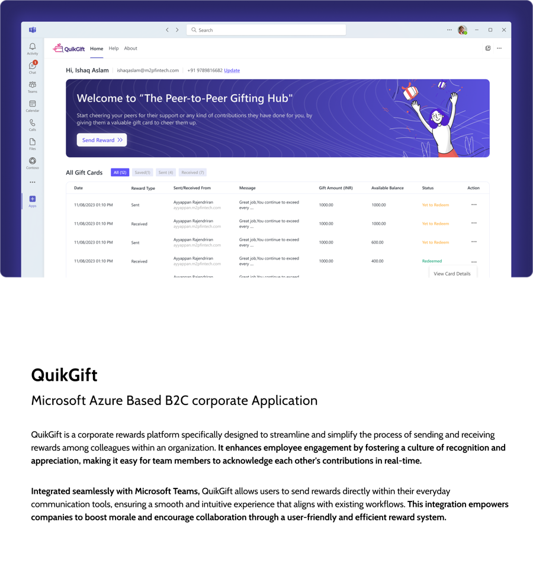
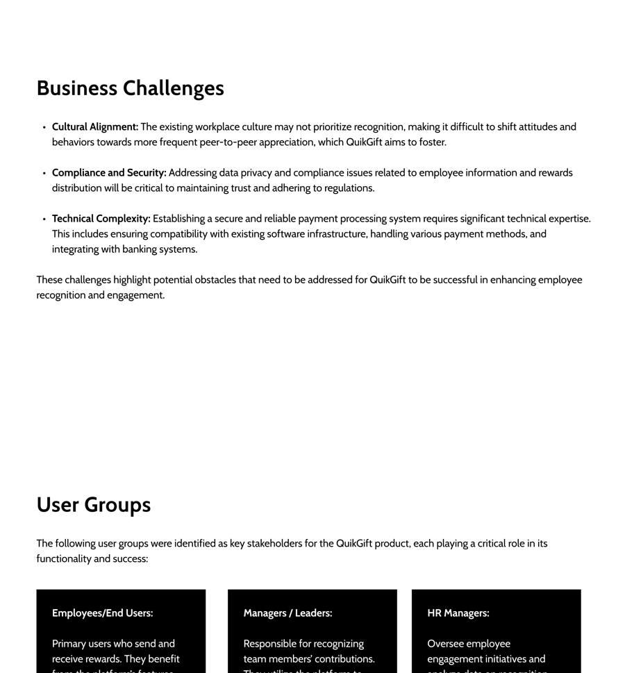
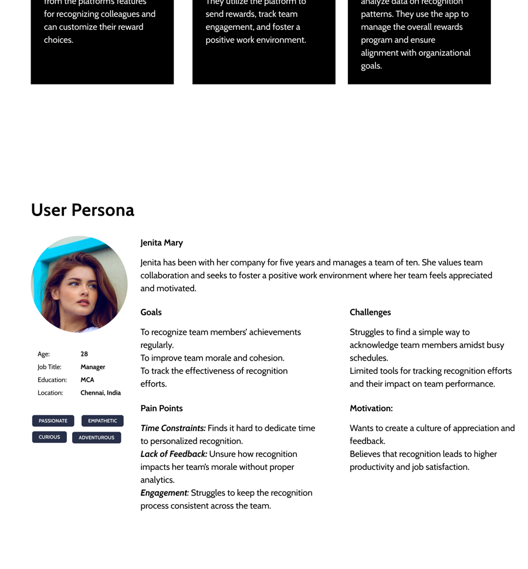
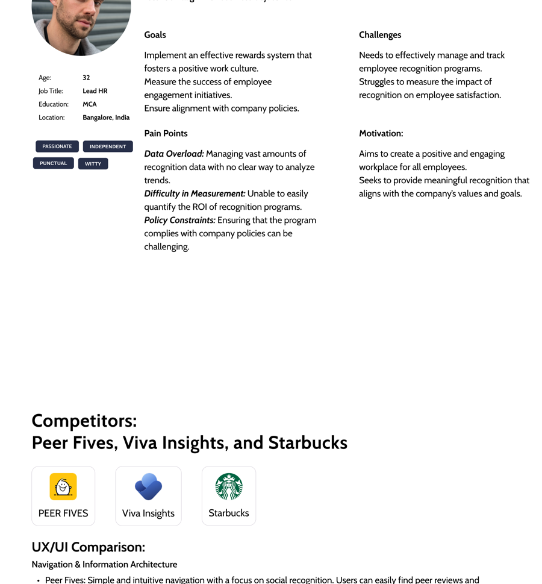
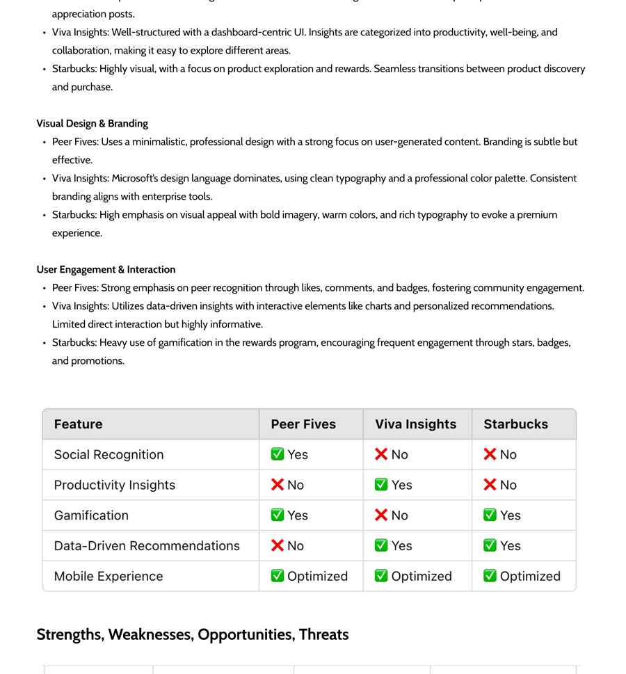
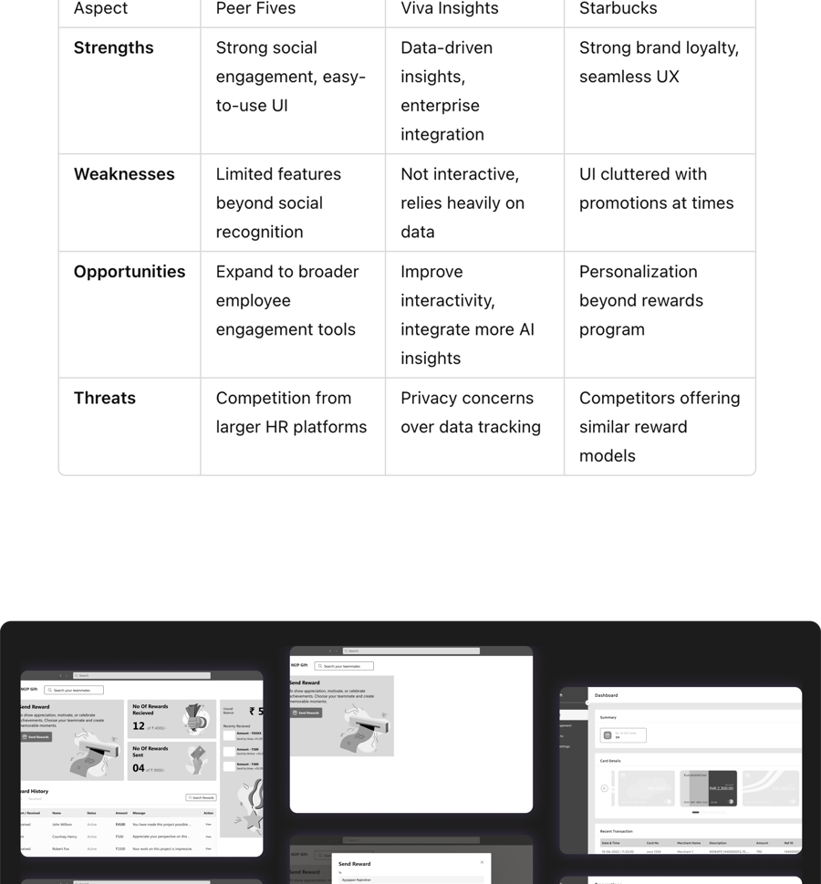
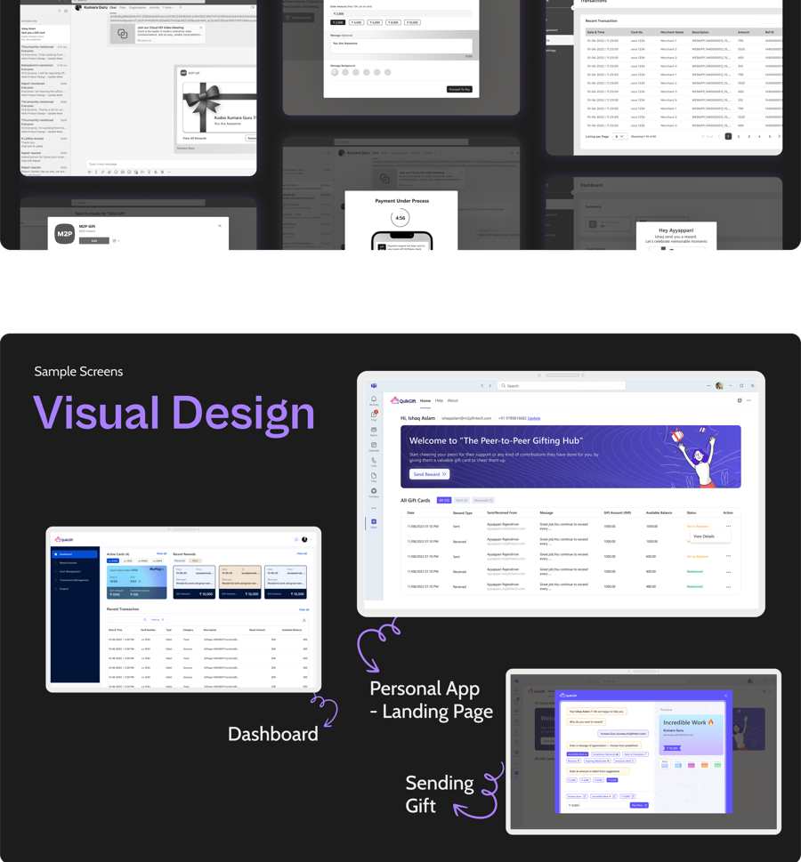
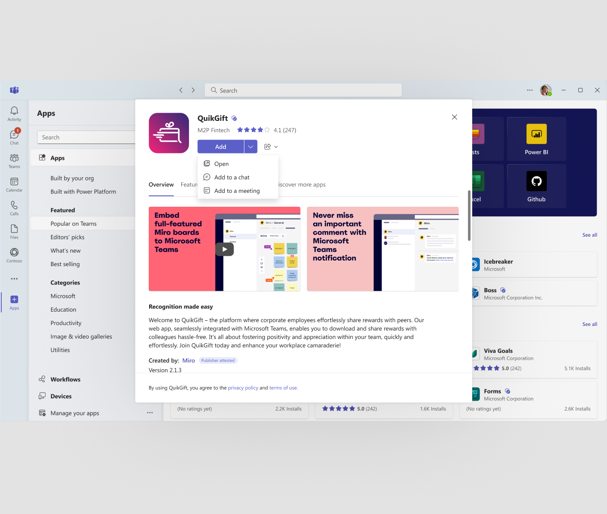

A peer-to-peer recognition platform built to live inside Microsoft Teams — the full trace, including exactly where the process stopped before a formal user test.

QuikGift is a corporate rewards platform for sending and receiving recognition between colleagues — integrated directly into Microsoft Teams so it lives inside the tool people already use all day, rather than becoming one more app nobody opens.
The assumption to check: that recognition was failing for lack of a good enough rewards app. Stakeholder input suggested something narrower and more specific — recognition was failing because it required leaving the tools people already worked in.
Three real challenges sat underneath those goals: a workplace culture that doesn't already prioritize recognition is hard to shift by adding software alone; employee data and reward distribution raise real compliance and privacy questions; and a reliable payment processing system means genuine technical complexity.

Three distinct groups needed this to work for different reasons: employees sending and receiving recognition day to day, managers recognizing their teams and tracking engagement, and HR overseeing the program and needing to prove it was working.


"Visibility" meaning two different things → need for both a fast personal view and a rolled-up analytical one → opportunity: one shared data model → solution: a personal recognition hub and a separate HR dashboard, detailed in Section 04.
Peer Fives does social recognition well but offers little beyond it. Viva Insights (Microsoft's own product) has strong data insight but isn't engaging day to day. Starbucks has neither social recognition nor productivity insight, but nobody does gamification and repeat engagement better.

That comparison directly shaped the brief: build the social recognition layer Peer Fives does well, back it with the analytics rigor Viva Insights users expect from Microsoft's own ecosystem, and borrow enough of Starbucks' gamification instinct to make recognition something people want to keep doing.
Alternative considered and rejected: building only the HR analytics layer first, treating the personal recognition experience as a later phase. Rejected because the research showed recognition dies without a fast, frictionless entry point — building the dashboard first would have had nothing to report on.
One underlying data model, two entry points: a personal hub for fast, individual recognition, and an HR dashboard for the aggregated, exportable view.
Wireframes stayed low-fidelity first specifically to test whether one information architecture could genuinely serve both the fast, personal act of sending recognition and the aggregated, analytical view HR needed.

The shipped design split cleanly: a personal app landing page — "The Peer-to-Peer Gifting Hub" — as the fast, human entry point, and a separate analytics dashboard giving HR and managers the aggregated, exportable view Ram Prasath needed to defend the program's ROI.

Two personas with genuinely different success criteria, a competitive analysis that named specific, testable feature gaps, and two distinct interfaces — the personal hub and the HR dashboard — that could each be evaluated against the persona they were built for. That's the scaffolding a real test would have been run against.
| Metric | Result |
|---|---|
| Personas with distinct success criteria | 2 (Jenita, Ram) |
| Competitor capability gaps identified | 3 (Peer Fives, Viva Insights, Starbucks) |
| Task completion / satisfaction score | Not measured — usability round not documented as run |
QuikGift shipped as a real Microsoft Teams app — listed and installable inside the Teams app store, not just mocked up as a standalone screen.

Nobody in this research lacked the desire to recognize colleagues. They lacked a fast enough way to do it inside their actual workflow.
"Visibility" meant a quick personal view for Jenita and a defensible analytics rollup for Ram — conflating them would have underserved both.
Starbucks isn't an HR platform, but its rewards program is a masterclass in repeat engagement.
The process document said "test." This case study only claims what that stage actually produced.
The through-line: QuikGift's real competition was never another rewards app. It was the extra ten seconds of effort that decides whether recognition happens at all.